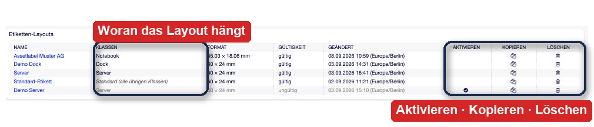
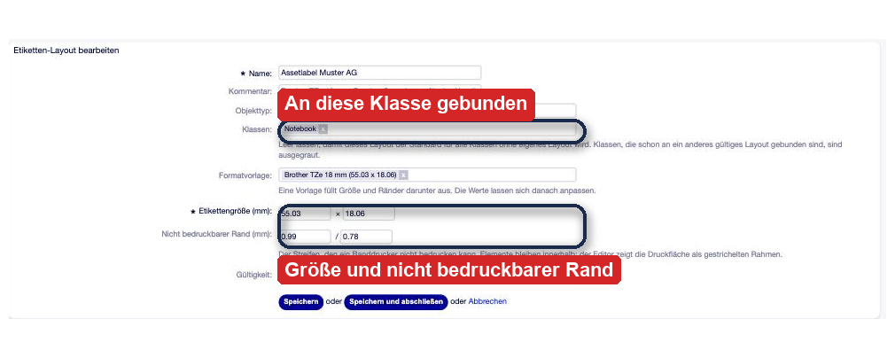
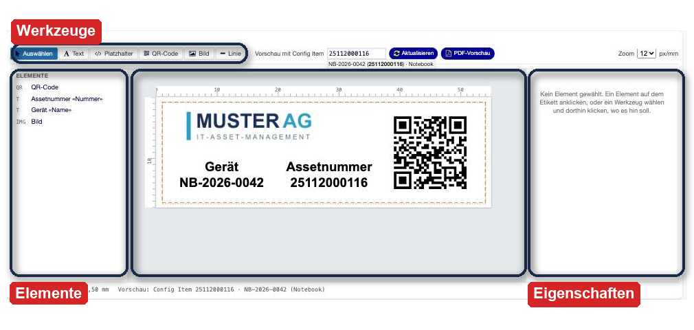
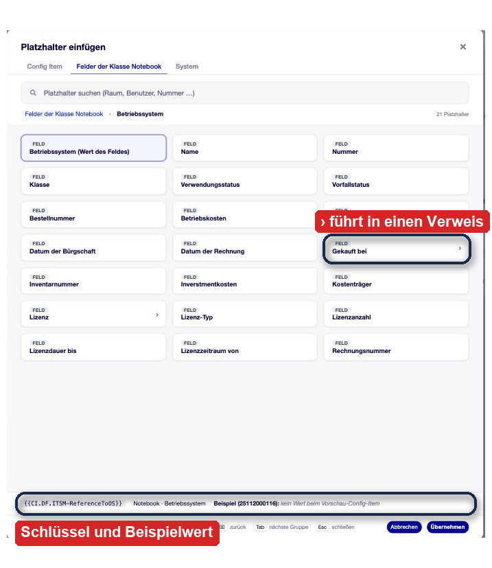
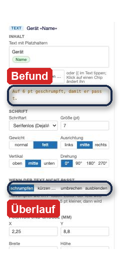
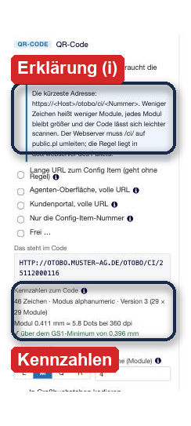
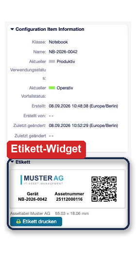
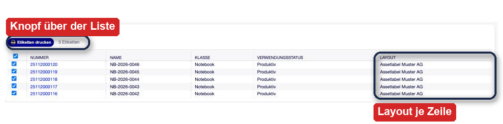
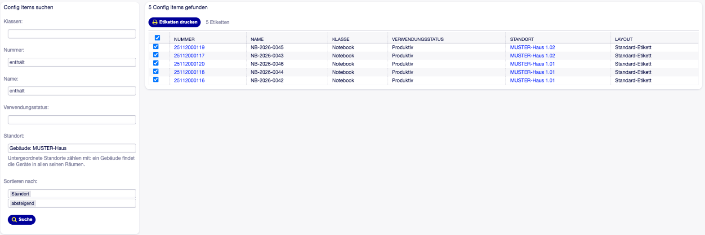

OTOBO Label Print¶
Beschreibung¶
Label Print druckt Etiketten für Config Items aus OTOBO heraus — mit QR-Code, Logo und genau den Angaben, die auf dem Gerät stehen sollen. Wer das Etikett später scannt, landet unmittelbar beim passenden Config Item in OTOBO.
Ein Administrator gestaltet je Config-Item-Klasse ein Etikett auf einer Millimeter-Leinwand: Texte, Platzhalter aus der CMDB, QR-Code, Firmenlogo, Linien. Die Agenten drucken danach ohne weitere Einstellungen — aus dem Config Item heraus, aus einem Seitenleisten-Widget oder als Massendruck für hunderte Geräte auf einmal. Ausgegeben wird ein PDF in exakter Etikettengröße, das der normale Druckdialog des Browsers an den Etikettendrucker gibt.
Das Addon arbeitet vollständig innerhalb von OTOBO. Es braucht keinen zusätzlichen Dienst, keinen Container und keine Browser-Erweiterung: das PDF entsteht mit den Bordmitteln des Frameworks, der QR-Encoder ist Teil des Pakets. Damit gibt es auch keine zweite Stelle, die betrieben, aktualisiert und überwacht werden muss.
Auf einen Blick
Etiketten-Layouts je Config-Item-Klasse, grafisch gestaltet — kein Vorlagen-Code
Platzhalter aus der gesamten CMDB, auch über Verweise hinweg (z. B. Raum → Gebäude des Raums)
QR-Code mit Kurz-URL zurück ins System; ein Scan führt direkt zum Config Item
Druck aus dem Config Item, aus der Seitenleiste oder als Massendruck
PDF in exakter Etikettengröße für Band- und Etikettendrucker
Kein externer Dienst, kein Core-Override, keine Änderung an bestehenden Masken
Einsatzszenarien¶
Inventur und Wareneingang. Neue Geräte werden in der CMDB angelegt und bekommen sofort ihr Etikett. Die Assetnummer steht lesbar auf dem Gerät, der QR-Code führt zum Datensatz — ohne Zwischenliste und ohne zweites Werkzeug.
Rollout im Feld. Vor dem Ausrollen einer Charge druckt der Servicedesk alle Etiketten in einem Durchgang. Der Massendruck erzeugt ein einziges PDF mit einem Etikett je Seite; der Banddrucker schneidet nach jeder Seite.
Support am Gerät. Der Techniker scannt das Etikett mit dem Telefon und hat den Config-Item-Datensatz vor sich: Standort, Verwendungsstatus, verknüpfte Tickets, Vertragslaufzeit. Ist er angemeldet, öffnet sich die Agenten-Oberfläche; ohne Anmeldung führt der Weg über den Login oder — wenn gewünscht — in das Kundenportal.
Standortkennzeichnung. Räume, Racks, Docking-Stationen und Bildschirme lassen sich mit demselben Werkzeug beschriften. Jede Klasse bekommt ihr eigenes Layout, etwa ein schmales Band für Kabel und Netzteile und ein größeres Format für Racks.
Einheitliches Erscheinungsbild. Das Etikett ist an die Klasse gebunden, nicht an den einzelnen Mitarbeiter. Alle Geräte einer Klasse werden gleich beschriftet, auch wenn an verschiedenen Standorten gedruckt wird.
Systemvoraussetzungen¶
Framework¶
OTOBO 11.0.x oder 11.1.x
Pakete¶
ITSMConfigurationManagement ab Version 11.0.0
Software von Drittanbietern¶
Keine. Das PDF entsteht über PDF::API2 aus der mitgelieferten CPAN-Bibliothek
von OTOBO, der QR-Encoder ist Bestandteil des Pakets.
Schriften¶
Das Paket bringt selbst keine Schriftdateien mit. Verwendet werden — in dieser
Reihenfolge — Liberation Sans bzw. Liberation Mono aus
var/fonts/FreiconLabelPrint/, sonst die DejaVu-Schriften, die OTOBO ohnehin
mitbringt. Ohne weiteres Zutun ist DejaVu Sans in Betrieb.
Drucker¶
Jeder Drucker, den das Betriebssystem kennt. Getestet mit Brother-P-touch-Bandgeräten; Formatvorlagen für die gängigen TZe-Bandbreiten und für ein Zebra-Format sind enthalten. Gedruckt wird aus dem PDF über den normalen Druckdialog.
Überblick¶
Installation — Paket einspielen, Rechte, Webserver-Regel für den QR-Code
Konfiguration — die Einstellungen des Addons
Admin-Handbuch — Etiketten-Layouts anlegen und gestalten
Anwender-Handbuch — Etiketten drucken, einzeln und in Serie
Referenz — Platzhalter, Rechte, Datenmodell
Installation¶
Das Addon wird als OPM-Paket eingespielt.
Über die Oberfläche
Admin → Paketverwaltung öffnen.
Unter Paket installieren die Datei
FreiconLabelPrint-<Version>.opmwählen und installieren.
Über die Konsole
bin/otobo.Console.pl Admin::Package::Install /pfad/zu/FreiconLabelPrint-<Version>.opm
Die Installation legt die Benutzergruppe label_adm an. Wer Mitglied dieser
Gruppe ist, darf Etiketten-Layouts anlegen und ändern, ohne sonstige
Administrationsrechte zu besitzen. Mitglieder der Gruppe admin dürfen es
ohnehin. Beim Deinstallieren wird die Gruppe nicht gelöscht, sondern nur ungültig
gesetzt — bestehende Zuordnungen bleiben damit erhalten.
Bemerkung
Das Paket ITSMConfigurationManagement muss vorher installiert sein. Ohne die
CMDB gibt es keine Config Items, die beschriftet werden könnten.
Webserver-Regel für den QR-Code¶
Der QR-Code trägt in der Voreinstellung eine Kurz-URL der Form
https://<host>/otobo/ci/<Nummer>
Je kürzer der Inhalt, desto weniger Module braucht der Code — und desto größer bleibt jedes einzelne Modul. Das ist der Unterschied zwischen einem Etikett, das im Halbdunkel einer Serverkabine noch gelesen wird, und einem, das dreimal angefunkt werden muss.
Damit diese Adresse funktioniert, leitet der Webserver sie auf OTOBO um. Die Regel
liegt dem Paket unter doc/webserver/ bei; hier die gängigen Varianten:
Apache, ohne Zusatzmodul:
RedirectMatch 302 "(?i)^/otobo/ci/([^/?#]+)$" "/otobo/public.pl?Action=PublicLabelScan;Number=$1"
Apache mit mod_rewrite:
RewriteRule "^/otobo/ci/([^/?#]+)$" "/otobo/public.pl?Action=PublicLabelScan;Number=$1" [NC,PT,L]
nginx:
location ~* ^/otobo/ci/([^/]+)$ {
return 302 /otobo/public.pl?Action=PublicLabelScan;Number=$1;
}
Bemerkung
Wenn die Regel nicht eingerichtet werden kann, stellen Sie den QR-Inhalt im Layout auf Lange URL zum Config Item (geht ohne Regel) um. Der Code funktioniert dann ohne jede Serveranpassung, wird aber um rund 34 Zeichen länger — er braucht eine höhere Version und damit kleinere Module. Auf schmalen Bändern ist das der Unterschied, der beim Scannen weh tut.
Konfiguration¶
Alle Einstellungen liegen in der SysConfig unter Core → FreiconLabelPrint. Für den Betrieb muss keine davon angefasst werden; die Voreinstellungen sind für Bandetiketten gewählt.
FreiconLabelPrint###Settings###FormatsDie Formatvorlagen, die im Layout-Editor zur Auswahl stehen. Ein Wert hat die Form
Breite;Höhe;Rand waagerecht;Rand senkrechtin Millimetern. Voreingestellt sind Brother TZe 12 mm, 18 mm und 24 mm sowie ein Zebra-Format 50 × 25 mm. Eigene Etikettengrößen tragen Sie hier ein, damit sie nicht bei jedem Layout neu getippt werden müssen.FreiconLabelPrint###Settings###PrinterDPIAuflösung des Etikettendruckers, Vorgabe
360. Der Wert ändert nichts am Druck. Er wird nur gebraucht, um im Editor auszurechnen, wie viele Druckpunkte auf ein QR-Modul entfallen — die Kennzahl, an der man erkennt, ob ein Code zu klein gerät.FreiconLabelPrint###Settings###ImageMaxKBGrößte Bilddatei, die der Editor annimmt, Vorgabe
200. Bilder werden im Layout selbst gespeichert; ein großes Logo bläht jedes Layout auf.FreiconLabelPrint###Settings###MaxReferenceDepthWie viele Verweisfelder ein Platzhalter verfolgen darf, Vorgabe
2. Bei2erreichen Sie vom Gerät aus den Raum und von dort das Gebäude.FreiconLabelPrint###Settings###PickerExcludeFieldsReguläre Ausdrücke für Dynamic-Field-Namen, die im Platzhalter-Fenster nicht angeboten werden. Voreingestellt
^monitos. Von Hand getippt funktionieren solche Felder weiterhin — die Einstellung räumt nur die Auswahl auf.FreiconLabelPrint###Settings###ZoomPreviewPxPerMMMaßstab der Etikettenvorschau im Config Item, Vorgabe
5Bildschirmpunkte je Millimeter.FreiconLabelPrint###Settings###ScanNoSessionTargetWohin ein Scan führt, wenn niemand angemeldet ist:
Agent(Vorgabe) oderCustomer. Nach der Anmeldung geht es automatisch beim Config Item weiter.FreiconLabelPrint###Settings###ScanPublicZoomErlaubt, dass ein Scan ohne Anmeldung direkt in die öffentliche Config-Item-Ansicht führt, Vorgabe aus. Setzt das öffentliche CMDB-Paket und die Freigabe der Klasse voraus.
FreiconLabelPrint###Settings###BulkLimitHöchstzahl der Treffer je Suche im Massendruck, Vorgabe
500.FreiconLabelPrint###Settings###BulkLocationFieldName des Verweisfelds, das den Standort eines Config Items trägt, Vorgabe
Location-ReferenceToLocation— das Feld aus dem Standard-Klassensatz. Der Massendruck bietet es als Filter und als Sortierung an. Leer: kein Standort-Filter.Damit der Filter erscheint, muss das Feld vorhanden, gültig, ein Feld für Config Items und ein Verweisfeld auf Config Items sein; sonst bleibt die Maske genau so, wie sie ohne die Einstellung war. Heißt das Standortfeld beim Kunden anders, tragen Sie hier seinen Namen ein.
Bemerkung
Untergeordnete Standorte zählen nur mit, wenn das Verweisfeld auf bestimmte Klassen eingeschränkt ist — an dieser Einschränkung erkennt das Paket, welche Klassen Standorte sind, und läuft die Kette Gebäude → Raum → Rack entlang. Nimmt das Feld jede Klasse an, wirkt der Filter nur auf den gewählten Standort selbst.
FreiconLabelPrint###Settings###ObjectTypesObjekttypen, für die es Layouts gibt. Derzeit ausschließlich Config Items.
Zwei weitere Einstellungen sind keine Stellschrauben, aber gelegentlich nützlich:
Frontend::Output::FilterElementPost###100-FreiconLabelPrint-ZoomWidgetDas Etiketten-Widget in der Seitenleiste des Config Items. Ungültig gesetzt, verschwindet das Widget — der Menüeintrag bleibt.
ITSMConfigItem::Frontend::MenuModule###450-LabelPrintDer Eintrag Etikett drucken im Menü des Config Items.
Admin-Handbuch¶
Die Grundregel¶
Jede Config-Item-Klasse hat höchstens ein gültiges Layout. Ein Layout kann dabei mehrere Klassen bündeln — Notebooks und Tablets etwa dasselbe Etikett tragen. Ein Layout ohne Klassen ist der Standard für alle übrigen Klassen; auch davon kann es nur eines geben.
Diese Regel ist der Grund, warum es keine Auswahl beim Drucken gibt: Ein Agent, der auf Etikett drucken klickt, bekommt genau das Etikett, das für diese Klasse hinterlegt ist. Er muss nichts wissen und kann nichts falsch machen.
Etiketten-Layouts verwalten¶
Admin → Verschiedenes → Etiketten-Layouts listet alle Layouts, gültige zuerst. Die Spalte Klassen zeigt, woran ein Layout gebunden ist, oder kursiv Standard (alle übrigen Klassen).
{kind=link}

Abb. 1 Die Layout-Übersicht. Die Spalte Klassen zeigt die Bindung; ein Layout ohne Klassen ist der Standard für alle übrigen. Rechts stehen Aktivieren, Kopieren und Löschen.¶
Rechts steht je Zeile:
- Aktivieren
Nur bei ungültigen Layouts. Setzt dieses Layout gültig und alle kollidierenden Layouts ungültig — in einem Schritt.
- Kopieren
Legt eine Kopie an. Die Kopie ist ungültig und trägt den Zusatz (Kopie).
- Löschen
Entfernt das Layout endgültig.
Tipp
So bauen Sie ein Etikett um, das im Einsatz ist: kopieren, die Kopie in Ruhe bearbeiten, dann Aktivieren. Bis zu diesem Klick druckt jeder weiter das alte Etikett; danach alle das neue. Es gibt keinen Zwischenzustand, in dem eine Klasse ohne Layout dasteht.
Ein Layout anlegen¶
Etiketten-Layout hinzufügen öffnet die Maske mit den Stammdaten:
- Name
Frei wählbar. Er taucht später in der Etikettenvorschau des Config Items auf.
- Kommentar
Für die Notiz, für welches Band oder welchen Drucker das Layout gedacht ist.
- Objekttyp
Derzeit Config Item.
- Klassen
Mehrfachauswahl. Klassen, die schon an ein anderes gültiges Layout gebunden sind, stehen ausgegraut in der Liste und tragen den Namen dieses Layouts — Sie sehen also sofort, warum eine Klasse nicht wählbar ist. Leer lassen macht das Layout zum Standard für alle übrigen Klassen.
- Formatvorlage
Füllt Größe und Ränder darunter aus. Die Werte lassen sich danach frei anpassen; die Vorlage ist nur eine Abkürzung.
- Etikettengröße (mm)
Breite × Höhe des Bandes oder der Etikette.
- Nicht bedruckbarer Rand (mm)
Der Streifen, den ein Banddrucker prinzipbedingt nicht bedruckt — links/rechts und oben/unten je getrennt. Der Editor zeigt die verbleibende Druckfläche als gestrichelten Rahmen, und Elemente bleiben innerhalb davon.
- Gültigkeit
Nur ein gültiges Layout je Klasse. Ein neu angelegtes Layout, dessen Klasse schon belegt ist, lässt sich nicht gültig speichern — die Meldung nennt das Layout, das im Weg steht.
{kind=link}

Abb. 2 Die Stammdaten eines Layouts. Klassen, die schon an ein anderes gültiges Layout gebunden sind, stehen in der Auswahl ausgegraut und nennen dieses Layout.¶
Der Layout-Editor¶
Unter den Stammdaten liegt der Kasten Etikettengestaltung. Was Sie dort sehen, ist keine Nachbildung: Die Leinwand zeigt dieselbe Zeichnung, aus der später das PDF entsteht — gleiche Maße, gleiche Schriftberechnung, gleicher QR-Code. Was im Editor passt, passt auch auf dem Band.
{kind=link}

Abb. 3 Der Layout-Editor. Die Leinwand zeigt dieselbe Zeichnung, aus der das PDF entsteht — was hier passt, passt auch auf dem Band.¶
Die Werkzeugleiste bietet Auswählen, Text, Platzhalter, QR-Code, Bild und Linie. Werkzeug wählen, dann auf das Etikett klicken — das Element entsteht an der Klickstelle.
Rechts daneben steht die Vorschau-Steuerung: Im Feld Vorschau mit Config Item tippen Sie einen Teil einer Nummer oder eines Namens und wählen aus den Vorschlägen. Ab da zeigt die Leinwand echte Werte statt Platzhalternamen. PDF-Vorschau öffnet das fertige Etikett als PDF in einem neuen Tab — das ist der ehrlichste Blick, den Sie vor dem ersten Druck bekommen. Über Zoom stellen Sie den Maßstab der Leinwand von 6 bis 24 Bildpunkten je Millimeter.
Bemerkung
Die Vorschau arbeitet immer mit dem ungespeicherten Stand aus dem Formular. Sie können also ausgiebig probieren und die Maske am Ende ohne Speichern verlassen.
Elemente bewegen. Ziehen rastet auf 0,25 mm. Die vier Eckgriffe ändern die Größe; ein QR-Code bleibt dabei immer quadratisch. Die Pfeiltasten verschieben um 0,1 mm, mit Shift um 1 mm. Kein Element kann das Etikett verlassen.
Nützliche Tasten
Taste |
Wirkung |
|---|---|
Pfeiltasten |
Element um 0,1 mm verschieben (mit Shift: 1 mm) |
Enter oder F2 |
Text direkt auf dem Etikett bearbeiten |
Strg/Cmd + Leertaste |
Platzhalter-Fenster für das gewählte Element |
Strg/Cmd + Z |
Rückgängig (50 Schritte) |
Strg/Cmd + Shift + Z |
Wiederherstellen |
Strg/Cmd + D |
Element duplizieren |
Entf |
Element entfernen |
Esc |
Auswahl aufheben |
Text und Platzhalter¶
Ein Textelement enthält festen Text, Platzhalter oder beides gemischt. Platzhalter erscheinen im Eingabefeld als farbige Chips — blau für Angaben des Config Items, grün für Felder der Klasse, grau für Systemwerte. Ein unbekannter Schlüssel wird rot gestrichelt dargestellt, noch bevor Sie speichern.
Es gibt drei Wege, einen Platzhalter zu setzen: den Knopf Platzhalter einfügen …,
die Zeichen {{ mitten im Text, oder Strg/Cmd + Leertaste. Alle drei öffnen
dasselbe Fenster.
{kind=link}

Abb. 4 Das Platzhalter-Fenster, hier im Verweisfeld Betriebssystem. Die Reiter trennen die Angaben des Config Items, die Felder der Klasse und die Systemwerte; unten stehen Schlüssel und der Wert beim Vorschau-Config-Item.¶
Das Fenster gliedert die Platzhalter in Gruppen: die Angaben des Config Items selbst,
die Felder je gebundener Klasse und die Systemwerte. Kacheln mit einem › führen
in ein Verweisfeld hinein — vom Gerät zum Raum, vom Raum zum Gebäude. Unten steht
immer, was der gewählte Platzhalter beim Vorschau-Config-Item tatsächlich liefert;
so sehen Sie vor dem Druck, ob das Feld überhaupt gefüllt ist.
Tipp
Das Suchfeld durchsucht alle Gruppen auf einmal, nach Bezeichnung und nach Schlüssel. „Raum“ findet das Verweisfeld, „Number“ die Assetnummer. Enter übernimmt den ersten Treffer — für den geübten Griff reichen drei Anschläge.
Wenn ein Wert fehlt. Hat das Config Item für einen Platzhalter keinen Wert,
druckt das Etikett nicht etwa {{CI.DF.Room}}, sondern lässt die Stelle weg. Der
Editor nennt die betroffenen Platzhalter im Befund des Elements, damit Sie den Fall
bemerken, bevor 200 Etiketten gedruckt sind.
Schrift und Verhalten bei zu langem Text¶
Je Textelement stellen Sie Schriftart (serifenlos oder feste Breite), Größe in Punkt, Gewicht, waagerechte und senkrechte Ausrichtung sowie eine Drehung in 90°-Schritten ein.
Wichtiger als all das ist die Einstellung Wenn der Text nicht passt. Gerätenamen sind selten so lang, wie das Etikett breit ist:
- schrumpfen
Bricht den Text um und verkleinert die Schrift in kleinen Schritten bis auf 5 pt, wobei nach jedem Schritt neu umbrochen wird. Erst wenn auch das nicht reicht, wird gekürzt. Das ist die Einstellung, die in den meisten Fällen das beste Ergebnis liefert.
- kürzen …
Behält die gewählte Schriftgröße und schneidet ab, was nicht passt — mit „…“ am Ende. Sinnvoll für Angaben, die auf einer Zeile bleiben müssen.
- umbrechen
Bricht auf der gewählten Größe um, ohne zu verkleinern. Passt der Text dann noch immer nicht, wird die letzte Zeile gekürzt.
- ausblenden
Lässt das Element ganz weg, wenn es nicht passt.
Bemerkung
Ein Wort, das für sich genommen breiter ist als der Kasten — ein Hostname wie
NB-2026-0042-ERSATZ etwa — wird umbrochen, und zwar bevorzugt an einem seiner
eigenen Trennzeichen (-, _, /, ., :). Das liest sich deutlich
besser als ein Schnitt mitten in der Zeichenfolge.
Unter dem Eingabefeld steht immer, was tatsächlich passiert: Passt mit 7 pt, 2 Zeile(n). oder Auf 5,5 pt geschrumpft, damit er passt. Weicht die gedruckte Größe von der eingestellten ab, erfahren Sie es hier — das Feld Größe (pt) zeigt weiterhin Ihren Wunsch, nicht das Ergebnis.
{kind=link}

Abb. 5 Die Einstellung Wenn der Text nicht passt. Der Befund darüber nennt die Schriftgröße, die tatsächlich gedruckt wird.¶
Der QR-Code¶
Für den Inhalt gibt es fünf Voreinstellungen und die Möglichkeit, frei zu formulieren:
Auswahl |
Wofür |
|---|---|
Kurz-URL zum Config Item |
Die Voreinstellung. Kürzester Inhalt, größte Module — braucht die Webserver-Regel. |
Lange URL zum Config Item |
Funktioniert ohne Serveranpassung, rund 34 Zeichen länger. |
Agenten-Oberfläche, volle URL |
Führt immer in die Agenten-Oberfläche. |
Kundenportal, volle URL |
Nur sinnvoll, wenn das Kundenportal Config Items zeigt. |
Nur die Config-Item-Nummer |
Kein Link. Ein Scanner zeigt die Nummer als Text an. Der kleinstmögliche Code. |
Dazu kommen Fehlerkorrektur (L, M, Q, H — Vorgabe M), Ruhezone in Modulen (Vorgabe 4) und das Häkchen In Großbuchstaben kodieren, das den kompakteren alphanumerischen Modus erlaubt.
Neben jedem dieser Felder steht ein (i). Ein Klick klappt die Erklärung darunter auf — was eine Version ist, was die Fehlerkorrektur kostet, warum die Ruhezone gebraucht wird. Sie müssen dafür nichts nachschlagen.
{kind=link}

Abb. 6 Die QR-Einstellungen. Jedes (i) klappt die Erklärung auf; die Kennzahlen sagen, ob die Modulgröße zum Scannen reicht.¶
Unter den Einstellungen stehen zwei Befunde. Das steht im Code zeigt den aufgelösten Inhalt — die tatsächliche Adresse mit eingesetzter Nummer. Kennzahlen zum Code nennt Zeichenzahl, Modus, Version, Modulgröße in Millimetern und die daraus folgende Zahl von Druckpunkten je Modul. Die letzte Zeile ist die wichtige:
✓ über dem GS1-Minimum von 0,396 mm— der Code ist groß genug.✗ zu klein — Feld vergrößern oder Inhalt kürzen— er wird beim Scannen zicken.
Tipp
Wird der Code zu klein: erst den Inhalt kürzen (Kurz-URL statt langer URL), dann die Fehlerkorrektur von Q auf M senken, erst zuletzt das Feld vergrößern. Jede Stufe Fehlerkorrektur kostet Module, und Module kosten Millimeter.
Bild und Linie¶
Ein Bild — in aller Regel das Firmenlogo — wird als PNG oder JPEG hochgeladen und im Layout gespeichert. Die Obergrenze steht in der SysConfig, voreingestellt 200 KB. Unter Darstellung wählen Sie zwischen proportional und strecken; das Häkchen Schwarzweiß zeigen stellt in der Vorschau dar, was ein einfarbiger Drucker tatsächlich aufs Band bringt.
Eine Linie ist ein gefüllter Balken: die Breite ist die Länge, die Höhe die Stärke. Für einen senkrechten Trenner tauschen Sie beides.
Anwender-Handbuch¶
Für Agenten gibt es nichts einzurichten. Sobald ein Layout für die Klasse hinterlegt ist, steht der Druck bereit.
Ein einzelnes Etikett drucken¶
Im Config Item führen zwei Wege zum selben Ziel:
der Menüeintrag Etikett drucken,
das Widget Etikett in der Seitenleiste.
Das Widget zeigt zusätzlich, wie das Etikett aussehen wird, dazu Layoutname und Format. Der Klick auf Etikett drucken öffnet das PDF in einem neuen Tab; von dort geht es über den gewohnten Druckdialog an den Etikettendrucker.
{kind=link}

Abb. 7 Das Widget Etikett in der Seitenleiste des Config Items: Vorschau, Layoutname, Format und der Druckknopf.¶
Bemerkung
Gibt es für die Klasse kein gültiges Layout, sagt das Widget genau das. Wer selbst Etiketten-Administrator ist, bekommt zusätzlich den Link, um eines anzulegen.
Viele Etiketten auf einmal¶
CMDB → Etiketten drucken öffnet die Massendruck-Maske. Links suchen Sie nach Klasse, Nummer, Name, Verwendungsstatus und Standort und legen die Sortierung fest — sie bestimmt die Reihenfolge der Seiten im PDF und damit die Reihenfolge, in der die Etiketten aus dem Drucker kommen.
{kind=link}

Abb. 8 Die Massendruck-Maske. Der Druckknopf steht über der Liste und wandert beim Scrollen mit; die Spalte Layout zeigt, womit jede Zeile gedruckt wird.¶
In der Trefferliste ist zunächst alles angehakt; entfernen Sie die Haken, die Sie nicht brauchen. Der Knopf Etiketten drucken steht über der Liste und wandert beim Scrollen mit — bei mehreren hundert Treffern müssen Sie nicht ans Ende blättern. Daneben steht laufend, wie viele Etiketten das PDF enthalten wird.
Zeilen ohne gültiges Layout stehen grau und lassen sich nicht anhaken. In der Spalte Layout steht dann kursiv keins. Diese Config Items werden übersprungen, nicht als leere Seite gedruckt.
Tipp
Auch aus der normalen Config-Item-Übersicht heraus geht es: Einträge anhaken und in der Aktionszeile Etiketten drucken wählen.
Nach Standort eingrenzen¶
Das Feld Standort nimmt ein Gebäude, einen Raum oder ein Rack; die ersten Buchstaben genügen, den Rest schlägt die Maske vor. Untergeordnete Standorte zählen mit — ein Gebäude findet die Geräte in allen seinen Räumen, ein Raum die Geräte in allen seinen Racks. So drucken Sie die Etiketten eines ganzen Hauses, ohne jeden Raum einzeln zu suchen.
Ist ein Standortfeld eingerichtet, hat die Trefferliste zusätzlich die Spalte Standort; der Eintrag führt mit einem Klick zum Standort-Config-Item. Dieselbe Spalte steht auch in der Sortierung zur Wahl — dann kommen die Etiketten Raum für Raum aus dem Drucker, in der Reihenfolge, in der man sie beim Rundgang anbringt.
{kind=link}

Abb. 9 Gesucht wurde nach dem Gebäude MUSTER-Haus; gefunden werden die Geräte aus seinen Räumen 1.01 und 1.02. Sortiert ist die Liste nach Standort, die Spalte Standort verlinkt auf den jeweiligen Raum.¶
Bemerkung
Das Feld Standort erscheint nur, wenn ein Standortfeld eingerichtet ist
(BulkLocationField, siehe Konfiguration). Fehlt es, bleibt die Maske
ohne Filter und ohne Spalte.
Das PDF¶
Das Ergebnis ist ein PDF mit einem Etikett je Seite, jede Seite exakt so groß wie das Etikett. Der Banddrucker schneidet nach jeder Seite. Stellen Sie im Druckdialog die Skalierung auf 100 % beziehungsweise Tatsächliche Größe — jede automatische Anpassung verzieht die Maße.
Etikett scannen¶
Ein Scan des QR-Codes führt zum Config Item, und zwar dorthin, wo der Scannende hingehört:
Angemeldeter Agent → Config Item in der Agenten-Oberfläche.
Angemeldeter Kunde → Config Item im Kundenportal, sofern dort verfügbar.
Niemand angemeldet → Anmeldemaske; nach der Anmeldung geht es automatisch beim Config Item weiter. Alternativ die öffentliche Ansicht, wenn sie freigegeben ist.
Ist die Nummer auf diesem System unbekannt, erscheint ein schlichter Hinweis: Das Etikett wurde vielleicht für ein anderes System gedruckt, oder das Objekt wurde entfernt.
Referenz¶
Platzhalter¶
Angaben des Config Items
Platzhalter |
Bedeutung |
|---|---|
|
Nummer |
|
Name |
|
Klasse |
|
Verwendungsstatus |
|
Vorfallstatus |
|
Interne ID |
Felder der Klasse — jedes Dynamic Field der Klassendefinition als
{{CI.DF.<Feldname>}}.
Über Verweise hinweg — führt ein Feld auf ein anderes Config Item, hängen Sie den Zielausdruck an:
{{CI.DF.Room.Name}} Name des verknüpften Raums
{{CI.DF.Room.Number}} dessen Nummer
{{CI.DF.Room.DF.Building.Name}} Gebäude des Raums
Zeigt ein Feld auf einen Agenten oder Kundenbenutzer, stehen .Fullname,
.Firstname, .Lastname, .Login und .Email zur Verfügung, bei
Kundenbenutzern zusätzlich .Phone, .Mobile und .CustomerID. Zeigt es auf
eine Kundenfirma, gibt es .Name, .Street, .ZIP, .City, .Country
und .URL.
Wie weit Verweise verfolgt werden, steuert MaxReferenceDepth.
Systemwerte
Platzhalter |
Bedeutung |
|---|---|
|
Kurz-URL zum Objekt (braucht die Webserver-Regel) |
|
Lange URL zum Objekt, ohne Regel nutzbar |
|
Basis-URL dieses Systems |
|
Hostname |
|
Druckdatum, |
Rechte und Gruppen¶
Wer |
Darf |
|---|---|
|
Etiketten-Layouts anlegen, ändern, kopieren, aktivieren, löschen |
Leserecht am Config Item |
dessen Etikett drucken |
|
die Massendruck-Maske öffnen |
Beim Massendruck wird das Leserecht für jedes Config Item einzeln geprüft, auch noch beim Druck selbst. Ein Agent kann also nur Etiketten von Geräten drucken, die er ohnehin sehen darf.
Wie das Etikett entsteht¶
Das Layout liegt als JSON in der Datenbank — eine Liste von Elementen mit Position und Größe in Millimetern. Beim Druck rechnet der Renderer daraus eine PDF-Seite in exakter Etikettengröße: Text mit den echten Metriken der eingebetteten Schrift, der QR-Code als zusammengefasste Rechtecke, Bilder als PNG oder JPEG, Linien als gefüllte Balken. Dieselbe Berechnung liefert das SVG, das der Editor auf der Leinwand zeigt — deshalb stimmen Vorschau und Druck überein.
Zwei Datenbanktabellen gehören zum Paket: label_layout mit einer Zeile je Layout
und label_layout_class für die Bindung an die Klassen.
Grenzen dieser Fassung¶
Layouts gibt es für Config Items. Weitere Objekttypen sind vorbereitet, aber nicht umgesetzt.
Die Massendruck-Liste zeigt kein Vorschaubild je Zeile.
Sortiert wird nach Nummer, Name oder Standort — nach einem beliebigen Dynamic Field nicht.